Manual do Marmo CAD
Orçamentos, desenho das peças e ordem de serviço para marmorarias
Versão 1.0.0 · 31/10/2026
Primeiros passos
O Marmo CAD faz o desenho das peças, calcula o orçamento e gera o PDF para mandar ao cliente pelo WhatsApp. Tudo fica guardado no próprio celular.
No menu de baixo estão as telas do dia a dia: Visão geral, Orçamentos, Projetos, Clientes e Materiais (as pedras). O ícone de engrenagem, no topo, abre as Configurações.
- Em Configurações → Dados da empresa, coloque o nome, o logo, o telefone e as condições de pagamento. Eles saem no PDF do orçamento.
- Em Materiais, confira as pedras e os preços do m². O app já vem com algumas pedras: mude os preços para os seus.
- Em Configurações → Valores padrão, ajuste as medidas que já vêm nas peças e os preços de recortes e bordas.
- Pronto: em Projetos, toque no que o cliente quer (pia, bancada, ilha…) e comece o desenho.
Exemplo completo: do desenho ao PDF
Vamos fazer, do começo ao fim, o orçamento de uma pia de cozinha de 1,80 m × 60 cm, com cuba, saia de 4 cm em volta e frontão de 10 cm na parede, para mandar ao cliente pelo WhatsApp e passar para a produção.
- Toque em Projetos, no menu de baixo, e depois em Pia de cozinha.
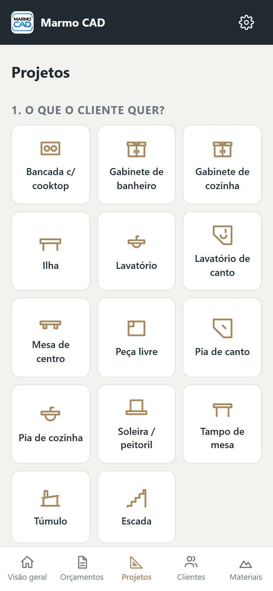
- A pia abre com as medidas padrão e a cuba no meio. Para mudar tudo de uma vez, toque em Falar comando e diga (ou escreva): "180 por 60, saia de 4 em volta, frontão de 10 no fundo". Toque em Fazer.
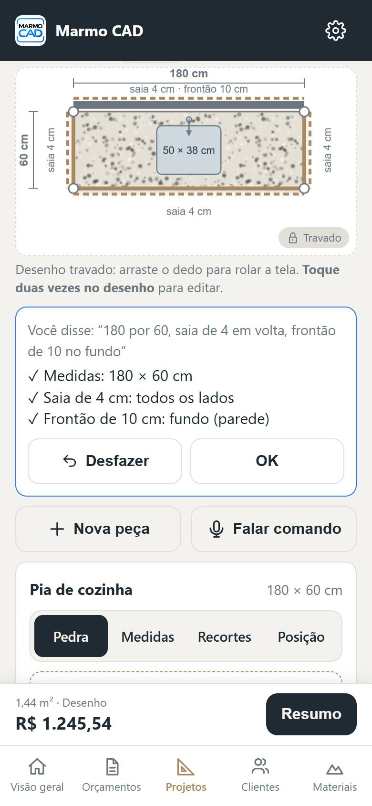
- Confira a pedra na aba Pedra e as medidas na aba Medidas. Toque em 3D · ver para mostrar ao cliente como vai ficar.
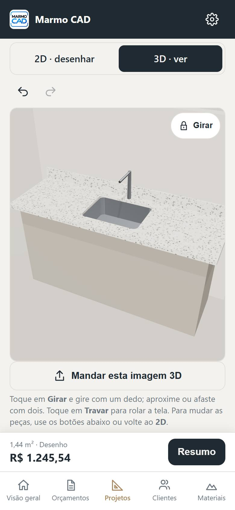
- Toque em Resumo (embaixo, à direita). Coloque desconto, instalação e frete em Valores do orçamento, escolha o cliente e toque em Gerar orçamento.
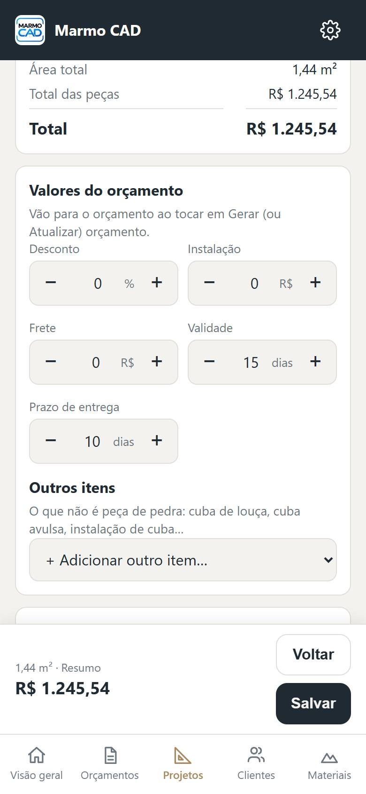
- O orçamento abre pronto, com o desenho, as peças e o total. Em Enviar ao cliente, toque em Enviar PDF e escolha o WhatsApp.
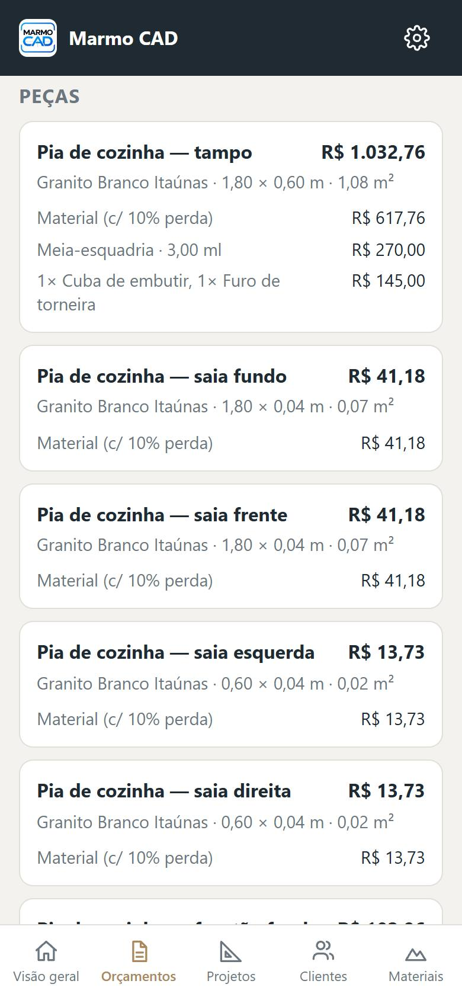
- Cliente aprovou? Mude o status para Aprovado e, em Ordem de serviço, toque em Enviar OS para mandar à produção (sem nenhum valor).
Quer mudar algo depois? No orçamento, toque em Ver / ajustar o desenho, faça a mudança e toque em Atualizar orçamento no Resumo.
Pedras (Materiais)
Cada pedra tem nome, tipo (granito, mármore, quartzo…), preço do m², perda % e espessura. A perda é somada à área na hora de calcular.
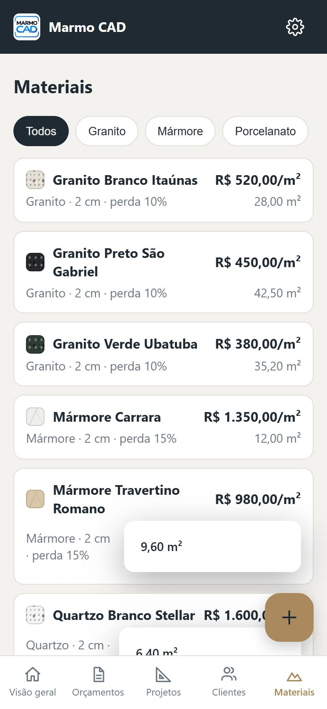
- Toque em Materiais no menu de baixo.
- Toque no + redondo para cadastrar, ou numa pedra para mudar.
- Para a pedra aparecer com a foto no desenho e no 3D, escolha Foto e tire uma foto da chapa (ou escolha da galeria).
- Toque em Salvar.
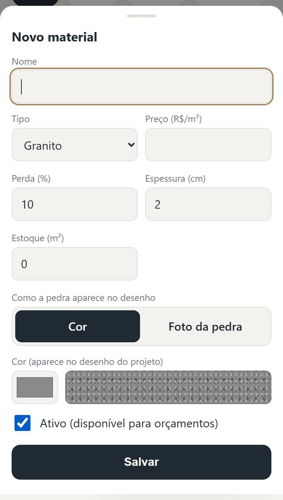
O preço da pedra fica guardado em cada orçamento já feito: mudar o preço aqui não muda orçamentos antigos, só os novos (e os que você atualizar).
Pedra que já está em algum orçamento não pode ser apagada. Para não usar mais, desmarque Ativo.
Clientes
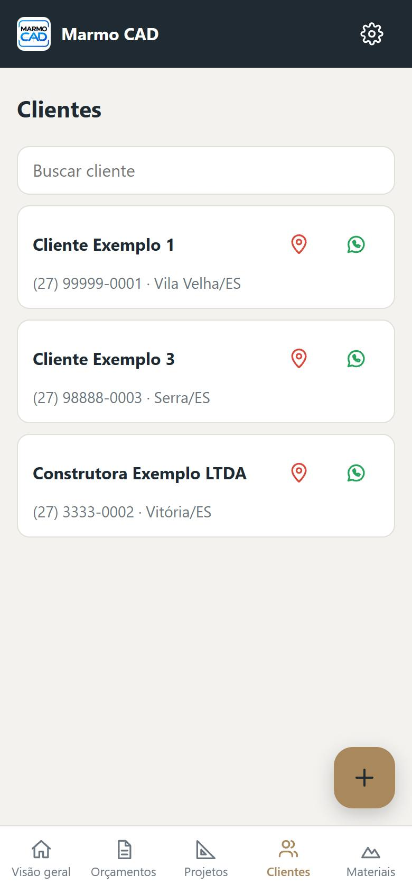
- Toque em Clientes e no + redondo.
- Preencha nome e telefone (o telefone é usado para abrir a conversa no WhatsApp). Digite só os números com o DDD: os parênteses e o traço entram sozinhos. Número de fora do Brasil: comece com +.
- Tem mais de um telefone? Toque em + Outro telefone e diga de quem é (ex.: obra, esposa). O primeiro é o do WhatsApp.
- CPF ou CNPJ: digite só os números, os pontos e a barra entram sozinhos.
- Na obra, toque em Marcar onde estou agora para guardar o ponto no mapa. Depois, o ícone de mapa abre o caminho no Google Maps.
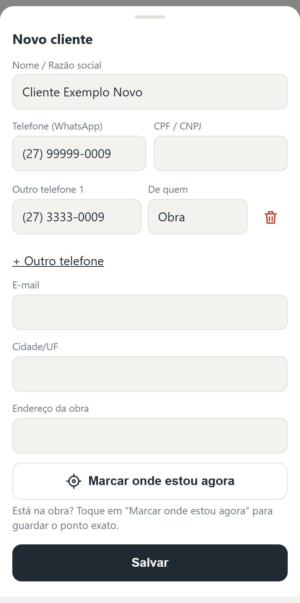
Dá para cadastrar o cliente sem sair do projeto ou do orçamento: no campo Cliente, escolha Cadastrar novo cliente.
Desenhar um projeto
O projeto é o desenho das peças, visto de cima, com as medidas em centímetros. Dele sai o orçamento (com todas as peças calculadas) e a ordem de serviço.
- Em Projetos, toque no que o cliente quer: pia de cozinha, bancada com cooktop, ilha, lavatório, soleira…
- O desenho abre travado, para o dedo rolar a tela sem mexer nas peças. Toque em Editar (ou dê dois toques no desenho) para mexer.
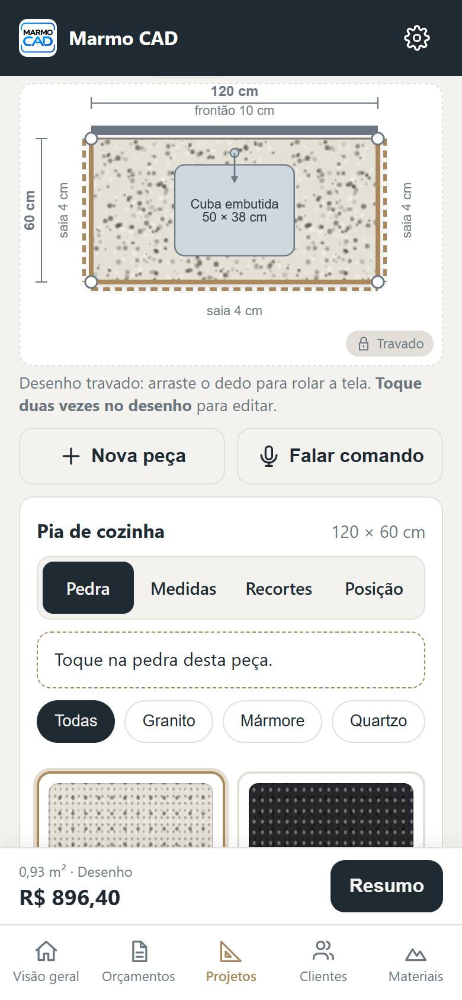
- Embaixo do desenho ficam as abas da peça: Pedra, Medidas, Recortes e Posição.
- Em Medidas, digite comprimento e profundidade em centímetros ou use os botões − e +.
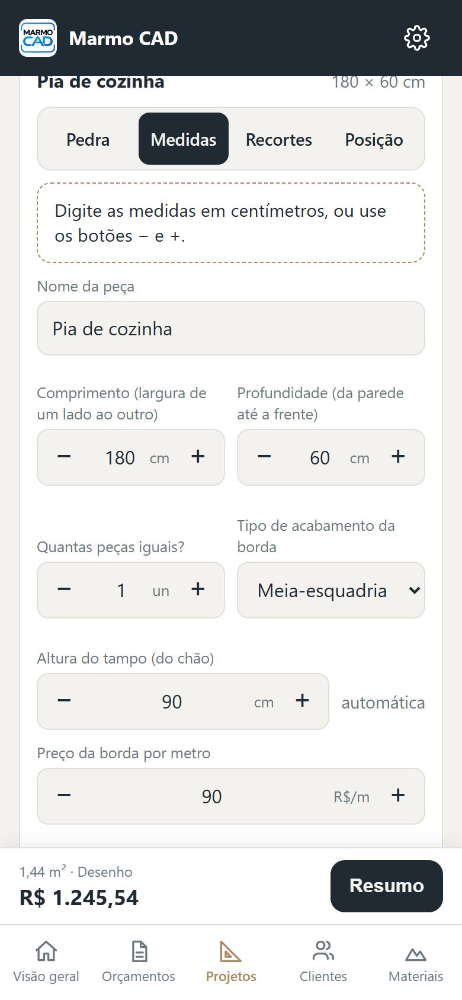
- Em Recortes, toque no recorte (cuba, cooktop, furo de torneira, tomada, coluna…) e arraste no desenho até o lugar certo.
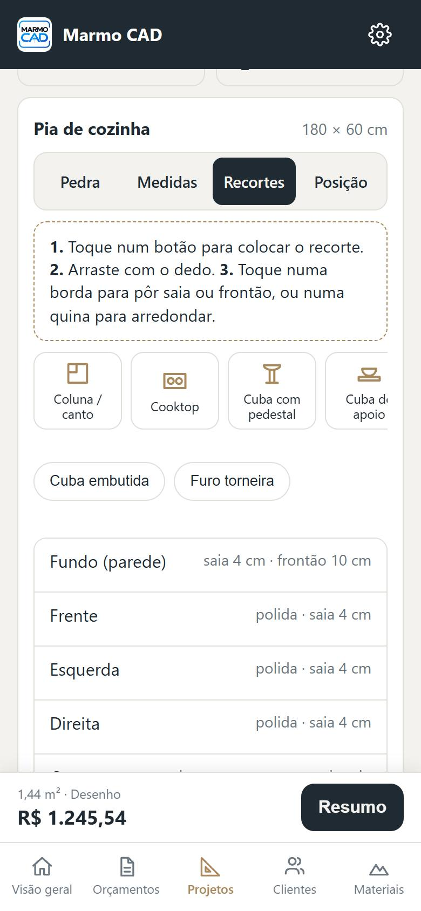
- Toque numa borda da peça (pode ser logo do lado de fora dela, o que ajuda em peça estreita) para escolher saia, frontão e polimento daquele lado. Toque um pouco para fora da quina, na diagonal, para arredondar.
- Toque em 3D · ver acima do desenho para ver a peça pronta, com a pedra, a cuba e o armário. Para mudar algo, volte ao 2D · desenhar.
- Com zoom (lupa +), arraste com dois dedos, ou num espaço vazio, para ver a parte do desenho que ficou escondida.
- Toque em Salvar no topo. Se sair do projeto sem salvar (pelo menu, pelo voltar ou por outro botão), o app pergunta: Salvar e sair, Sair sem salvar ou Continuar editando.
Mais rápido por voz: toque em Falar comando e diga, por exemplo, "180 por 60, saia de 4 em volta, frontão de 10 no fundo". Veja o assunto Comando de voz.
Errou? Use Desfazer (seta para trás) e Refazer acima do desenho.
Mais recursos do desenho
Para a cuba ficar de frente para a quina, toque nela e, em Girar o recorte, escolha 45° (ou 30°, 90° ou outro ângulo). Se girada ela não couber na peça, o app diminui a cuba para caber. Por voz: "girar a cuba 45".
Rebaixamento italiano (corte reto de desbaste: a pedra fica mais baixa, com um degrau na borda): é um recorte próprio, cobrado à parte. Na aba Recortes, toque em Rebaixamento italiano e arraste para o lugar (em volta da cuba ou onde quiser). Toque nele para ajustar o comprimento e a largura, onde ele começa e termina na pia (da esquerda e do fundo), quanto desce e o preço (padrão em Configurações → Valores padrão). Por voz: "rebaixo italiano" (5 cm em volta da cuba), "rebaixo de 8", "rebaixo 80 por 50" ou "sem rebaixo".
Para onde a torneira aponta: toque no furo da torneira e escolha Frente, Esquerda, Fundo ou Direita (ou ajuste os graus). A seta no desenho e a torneira no 3D mostram a direção. Por voz: "torneira para a esquerda".
Pia de canto e Lavatório de canto: em Projetos, toque num deles. Eles encaixam no canto das paredes e têm a frente cortada na diagonal; a pia vem com a cuba virada para esse lado e o lavatório com cuba redonda. Para montar um L, toque em Nova peça: a primeira entra encostada à esquerda e a segunda embaixo, já girada junto da parede; onde as peças se encostam não é cobrada saia nem borda. Qualquer canto de qualquer peça pode ser cortado assim: toque no canto e escolha Chanfrado (lado reto); ajuste o tamanho do corte, a borda polida e a saia da diagonal. Para mexer no lado da diagonal, toque nele no desenho (como nos outros lados) ou em Diagonal na lista dos lados; por voz: "saia de 10 na diagonal". A pedra cortada sai do m².
Tipos de cuba (louça ou inox comprada): na aba Recortes há Cuba embutida, de apoio, de sobrepor, de semiencaixe e com pedestal. Toque na cuba no desenho para trocar como ela é instalada (Apoio: só o furo da válvula na pedra; Embutida: por baixo; Sobrepor: a borda em cima da pedra; Semiencaixe: parte da cuba sai da frente, e ajuste quanto ela sai; Com pedestal: coluna embaixo no lugar do armário) e o formato (retangular, oval ou redonda). Cada instalação tem o seu preço (Configurações → Valores padrão). No pedestal escolha coluna de pedra ou coluna de louça (do cliente) e o preço dela. Por voz: "cuba de apoio", "cuba com pedestal de louça", "cuba redonda".
No lavatório de canto (ou pia de canto), a cuba de semiencaixe pode passar pela diagonal: toque na cuba e, em Onde a cuba passa da pedra?, escolha Na diagonal. Ela gira de frente para a diagonal e a saia e a borda param onde a cuba passa. Girada, ela também anda para trás e para os lados (arraste ou ajuste as distâncias).
Pés embaixo do tampo (mesa, bancada, ilha, mesa de centro), da mesma pedra, onde o cliente quiser: na aba Medidas, toque em Um no centro, Dois nas pontas ou Mais um pé. Cada pé é uma Coluna (4 placas), com emendas em meia-esquadria, ou uma Placa (da frente ao fundo ou ao comprido). Ajuste o tamanho e o lugar (centro do pé, da esquerda e do fundo) ou, com o desenho destravado, arraste o pé (tracejado). Os pés vão do chão até embaixo do tampo e entram no orçamento. Por voz: "pé no centro", "dois pés", "duas placas", "sem pés".
Gabinete de pedra (banheiro e cozinha): em Projetos ou Nova peça, toque em Gabinete de banheiro ou Gabinete de cozinha (já vêm com a cuba esculpida na pedra; o fundo da cuba — 20 cm — se ajusta tocando nela), ou, em qualquer pia/lavatório, abra Gabinete de pedra na aba Medidas e toque em Com gabinete. O gabinete é dividido em vãos lado a lado: cada vão é Porta (1 ou 2 folhas, de pedra ou de outro material, com o preço por folha) ou Nicho aberto, e pode ter prateleiras. Laterais, base, fundo, divisórias, prateleiras e portas de pedra entram no orçamento. Por voz: "gabinete de banheiro", "com gabinete", "sem gabinete".
Nicho na parede e prateleiras de pedra: na aba Medidas, abra Nichos na parede (largura, altura, profundidade, quanto fica acima do tampo, posição e prateleiras) ou Prateleiras de pedra na parede (Embaixo da pia ou Em cima da pia; ajuste comprimento, profundidade, altura do chão e posição). Para mudar ou remover depois, toque na prateleira ou no nicho no desenho (com o desenho destravado) ou no 3D. Prateleira embaixo da pia tira o armário do 3D. Por voz: "nicho na parede", "prateleira embaixo", "prateleira em cima", "sem prateleira".
Mesa de centro: em Projetos ou Nova peça, toque em Mesa de centro (baixa, 40 cm). Ela já vem com pé de mesa nas laterais; dá para tirar e usar pés embaixo do tampo (um no centro ou vários).
Pé de mesa (saia até o chão, num lado): toque no lado e marque Pé de mesa. Ele pode ser duplo (2 placas coladas) e ter rodapé em cada ponta: uma aba que continua pelo lado da peça, como uma saia até o chão. Com o canto arredondado, o pé acompanha a curva do tampo.
Estoque de cubas: em Configurações → Estoque de cubas, cadastre as cubas (instalação, formato, medidas) e os pedestais de louça que você vende, com o preço de venda e a quantidade. No projeto, toque na cuba e escolha a Cuba do estoque (o recorte já fica com o formato e a medida dela); na cuba com pedestal de louça, escolha o Pedestal do estoque. Eles entram no orçamento com o preço de venda e saem do estoque quando o orçamento é aprovado (voltam se ele for cancelado ou excluído).
Lado curvo (côncavo ou convexo, visto de cima): toque no lado (ou no canto chanfrado, para a diagonal da pia/lavatório de canto) e escolha Convexo (barriga para fora) ou Côncavo (para dentro), e quanto curva. A borda e a saia vão pelo arco, a área muda e o corte curvo é cobrado por lado (Valores padrão). Por voz: "frente convexa 10", "diagonal côncava 8", "frente reta".
Peça inteira em L ou U (uma pedra só, sem emenda): monte com peças encostadas (Nova peça) e, na aba Posição, marque Peça inteira. No orçamento sai um tampo só, cobrado pelo retângulo que envolve as peças. As peças precisam ter a mesma pedra. Por voz: "peça inteira", "com emenda".
Túmulo: em Projetos ou em Nova peça, toque em Túmulo. No desenho, a cabeceira fica do lado esquerdo; comprimento = da cabeceira aos pés. Na aba Túmulo, escolha Tampa reta ou Tampa inclinada (altura na cabeceira e nos pés: um lado mais baixo deixa a tampa inclinada), a sobra da tampa, a lápide (altura do chão) e a base de pedra em volta. O orçamento sai com tampa (com a borda), laterais (em trapézio na tampa inclinada), cabeceira, pés, lápide e base. Por voz: "túmulo", "cabeceira 70", "pés 50", "tampa reta", "sem base".
Braço (tampo que continua para o lado, mais raso, para apoiar objetos ou pôr o vaso sanitário embaixo): na aba Medidas do lavatório ou da pia, toque em + Braço esquerdo ou + Braço direito. Ele entra colado, alinhado pelo fundo, com a mesma pedra, borda, frontão e saia, sem armário embaixo; ajuste o comprimento e a profundidade dele. O braço acompanha a peça quando ela muda ou anda. A pia com braço é sempre uma peça inteira (sem emenda), cobrada pelo retângulo que envolve as duas, com a perda da pedra. Para tirar, escolha o braço e use Remover peça. Por voz: "braço esquerdo", "braço dos dois lados", "sem braço".
Lavatório de braço inclinado: use a Cuba inclinada. Ela é esculpida na própria pedra, com o fundo em rampa até o ralo linear. Toque na cuba e escolha para onde a rampa desce: fundo (parede), frente, esquerda ou direita (as setas no desenho mostram). Por voz: "rampa para a frente".
Várias peças, cozinha em L e ambientes
Uma cozinha em L, uma bancada com ilha ou um banheiro com lavatório e soleira ficam no mesmo desenho, cada peça com a sua pedra, medidas e recortes.
- Toque em Nova peça para acrescentar outra peça ao mesmo desenho. Ela entra encostada à direita, com a mesma pedra.
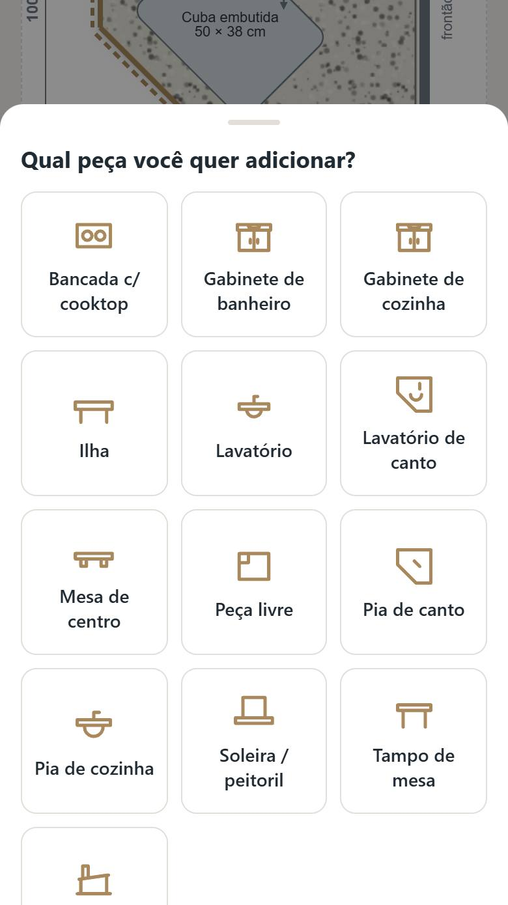
- Com a pia de canto, a primeira peça nova entra encostada à esquerda e a segunda embaixo, já girada junto da parede: o L fica pronto sozinho.
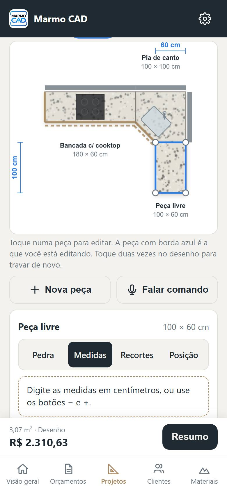
- Para montar em L: na aba Posição, toque em Girar 90° e depois em Encostar no lado certo. Arrastando, a peça gruda nas outras.
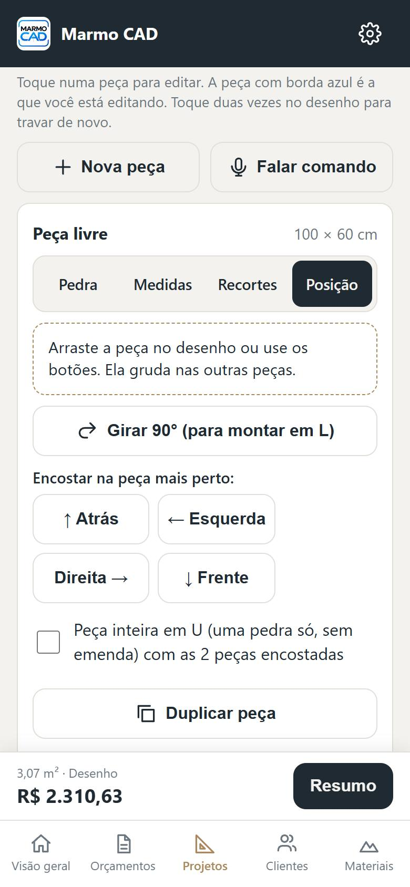
- Quando um lado encosta em outra peça, o painel daquele lado pergunta se a saia, o frontão e a borda vão no lado todo ou só na parte livre. Isso muda o valor do orçamento.
- Para outro cômodo (ex.: banheiro), toque em + Desenho no topo. Cada desenho é um ambiente do mesmo projeto.
Em Posição também estão Duplicar peça e Remover peça.
- Cada peça pode ter uma pedra diferente: toque na peça e escolha na aba Pedra.
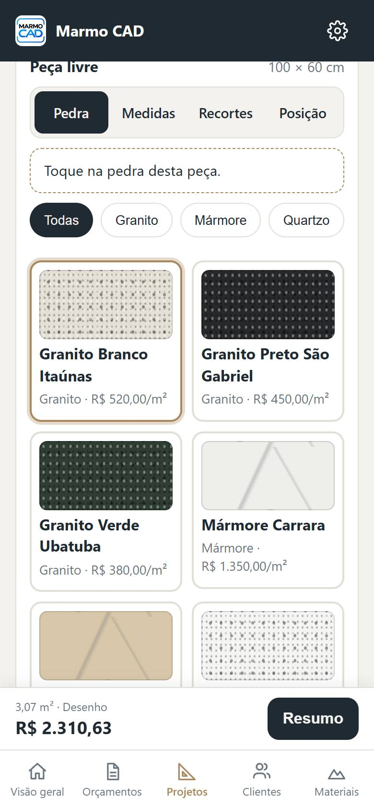
Escada
A escada tem tela própria: você informa poucas medidas e o app calcula os degraus, os espelhos, os patamares e os rodapés.
- Em Projetos, toque em Escada (ou, dentro de um projeto, em + Desenho → Escada).
- Escolha o formato: Reta, Em L, Em U ou Espiral (caracol). No L e no U, escolha a curva com patamar ou com degraus em leque e para que lado vira.
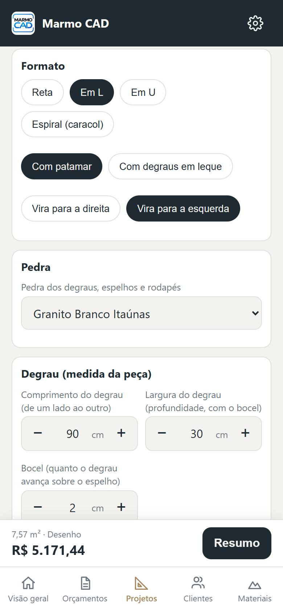
- Escolha a pedra. Em Degrau (medida da peça), digite o comprimento do degrau (de um lado ao outro) e a largura do degrau (a profundidade da peça, já com o bocel). A pisada (onde o pé apoia) é a largura menos o bocel.
- Em Altura e degraus, digite a altura total (do piso de baixo ao de cima).
- O app calcula quantos espelhos e de que altura (perto de 17,5 cm) e avisa se o passo ficar desconfortável. Dá para mudar o número de espelhos à mão.
- Na reta, dá para pôr um patamar no meio. Marque o rodapé do lado esquerdo e/ou direito (de quem sobe): em Onde vai o rodapé, escolha Degraus e espelhos (recortado), que acompanha cada degrau e sobe junto de cada espelho até o piso de cima, Só nos degraus (piso) ou Só nos espelhos, e escolha o acabamento da frente dos degraus.
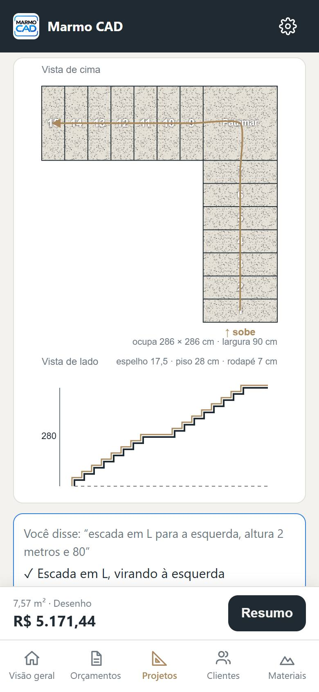
- Toque em 3D · ver para ver a escada pronta.
- Tem mais de uma escada na obra? Toque em Nova escada: ela entra no mesmo desenho (Escada 2, Escada 3…). Ela já vem ligada, começando onde a anterior termina; em Onde fica escolha No fim, À esquerda, À direita ou Separada. Toque no nome da escada para mudar as medidas dela; todas entram no mesmo orçamento. Remover a Escada 2 tira a escada escolhida.
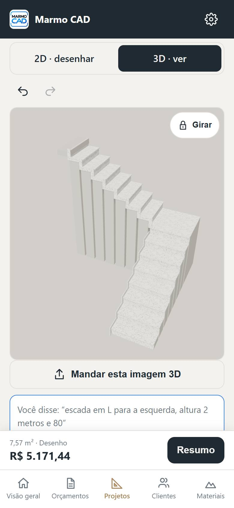
Também dá para usar o Falar comando na escada: "escada em L para a esquerda", "altura 2 metros e 80", "15 degraus", "leque de 4", "patamar depois do 8", "sem espelho", "rodapé dos dois lados", "nova escada", "encostar na direita", "separar", "remover a escada".
No orçamento: degraus, patamares e espelhos pelo m² da pedra (os degraus em leque e da espiral pelo retângulo de onde a peça é cortada), a frente polida por metro e o rodapé por metro (só a parte escolhida: degraus, espelhos com o de chegada, ou os dois). A ordem de serviço traz a lista de corte com os números dos degraus do desenho.
O passo confortável fica entre 60 e 65 cm (2 espelhos + 1 piso). Espelho acima de 19 cm fica alto demais.
Comando de voz
Toque em Falar comando no editor e diga o que quer, com frases simples. Alguns exemplos:
- "pia de cozinha 180 por 60"
- "cuba no meio" ou "cooktop na direita"
- "saia de 4 em volta" e "frontão de 10 no fundo"
- "borda meia esquadria"
- "girar", "encostar na direita", "desfazer", "salvar"
- Na escada: "escada em U", "largura 1 metro", "com patamar", "rodapé na esquerda"
Em O que posso falar?, dentro do comando de voz, estão todos os exemplos, por assunto. Tocar num exemplo já faz o comando na peça (dá para desfazer).
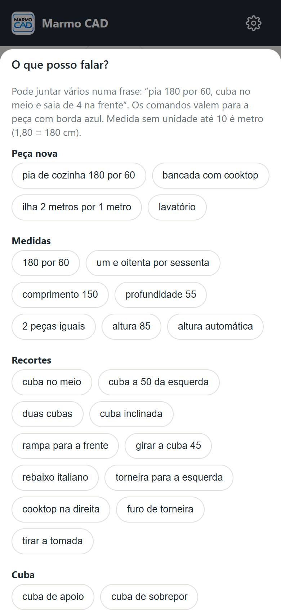
Na primeira vez, o celular pede permissão para usar o microfone: toque em Permitir. No Android, funciona sem internet se o português estiver baixado no reconhecimento de voz. Se não entender, dá para escrever o mesmo comando no campo de texto. No iPhone, toque no campo de texto e fale pelo microfone do teclado.
Ver em 3D
- No editor, toque em 3D · ver.
- O 3D abre travado, para a tela rolar. Toque em Girar e gire com um dedo; aproxime ou afaste com dois. Toque em Travar para voltar a rolar.
- Toque em Mandar esta imagem 3D para enviar o ângulo que está na tela pelo WhatsApp.
- Para mudar as peças, volte para 2D · desenhar.
- Cada peça tem a Altura do tampo (aba Medidas): ela vem automática pelo tipo da peça, e peças encostadas com saias diferentes ficam com a saia alinhada embaixo. Mude a altura para uma peça ficar mais alta ou mais baixa que a do lado; Automática volta ao normal.
O 3D também aparece no orçamento (botão 3D em cada desenho) e pode ir no PDF.
Fazer o orçamento
Do projeto desenhado:
- No editor, toque em Resumo (embaixo, à direita).
- Em Valores do orçamento, coloque desconto, instalação, frete, validade, prazo e outros itens (do cadastro ou digitados). Eles vão para o orçamento junto com as peças.
- Escolha o cliente e confira as peças e os valores.
- Toque em Gerar orçamento. Se mudar o desenho depois, o botão vira Atualizar orçamento.
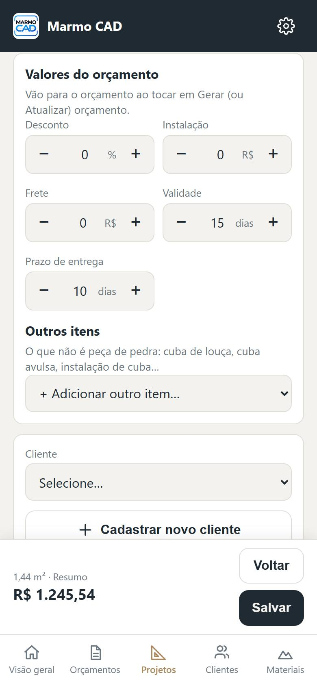
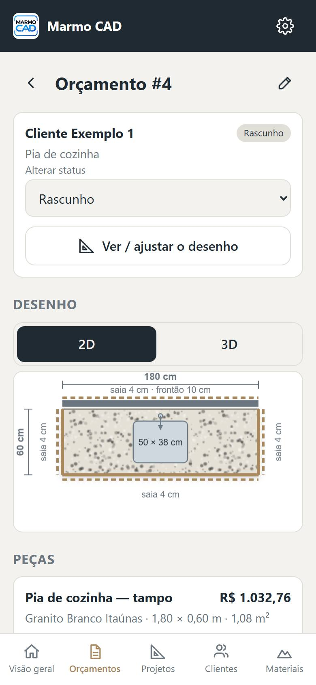
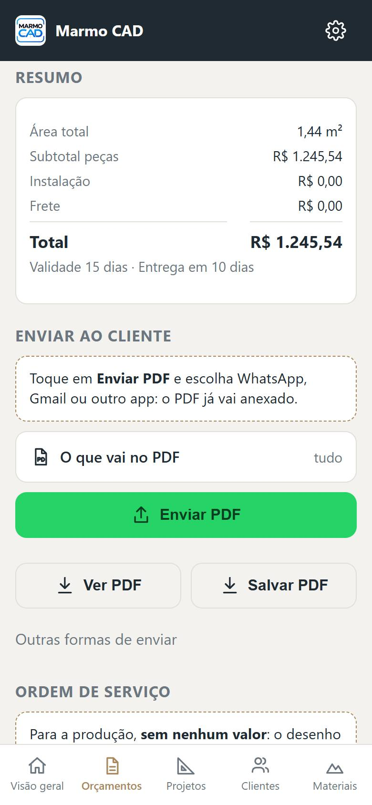
Sem desenho (orçamento rápido): em Orçamentos, toque no + redondo e preencha as peças com medidas em metros.
No orçamento ficam também Desconto (%), Instalação, Frete, Validade e Prazo de entrega. Com desconto, marque onde ele vale: peças, outros itens, instalação e frete (vem tudo marcado; desmarque o que não quiser).
Outros itens (o que não é peça de pedra: cuba de louça, cuba esculpida avulsa, instalação de cuba…): no orçamento, em + Adicionar outro item, escolha um item do cadastro ou digite um que não está cadastrado (nome, descrição, quantidade, unidade e valor). Um item digitado pode ser guardado no cadastro tocando em Guardar no cadastro. O cadastro fica em Configurações → Outros itens. O orçamento guarda uma cópia: mudar o valor no cadastro não muda orçamento já feito. Dá para fazer orçamento só com outros itens (por exemplo, só a cuba): remova a peça.
O status (Rascunho, Enviado, Aprovado, Em produção, Pronto, Instalado) é mudado em Alterar status, dentro do orçamento. Mudar o status não muda os preços.
Mandar o orçamento ao cliente
- Abra o orçamento e vá até Enviar ao cliente.
- Em O que vai no PDF, desmarque o que não quer mostrar (ex.: valor de cada peça). O total sempre aparece.
- Toque em Enviar PDF e escolha o WhatsApp e o cliente.
- O WhatsApp não manda texto junto com o arquivo: a mensagem já fica copiada. Depois de mandar o PDF, toque em Mandar a mensagem no painel que aparece (ou cole na conversa).
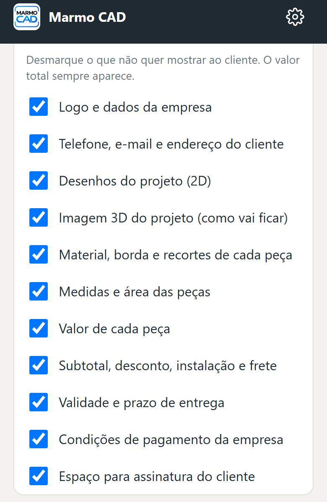
Em Outras formas de enviar estão: só a imagem do desenho, só a imagem 3D e só o texto.
Ver PDF abre o arquivo no leitor do celular. Salvar PDF abre a lista do celular para guardar no Drive (ou Arquivos, no iPhone) ou mandar por outro app.
Ordem de serviço (produção)
A ordem de serviço é o PDF para a produção, sem nenhum valor: o desenho inteiro e a imagem 3D, a lista de corte (todas as peças a cortar, numeradas, com pedra, medidas, quantidade, acabamento e recortes), produção e assinaturas e, no fim, cada peça separada numa folha (quando o desenho tem mais de uma peça).
- No orçamento, vá até Ordem de serviço.
- Escolha a folha (Retrato ou Paisagem).
- Em O que vai na OS, desmarque o que a produção não precisa (empresa, contato do cliente, desenho, imagem 3D, lista de corte, prazo, observações, assinaturas, peças separadas). O app lembra a escolha neste celular.
- Toque em Enviar OS, Ver OS ou Salvar OS.
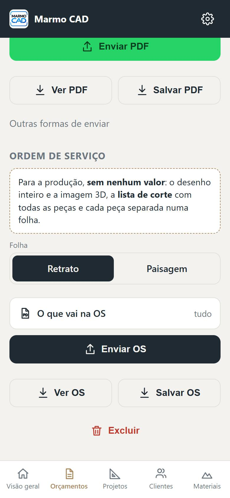
Backup e troca de celular
Os dados ficam só neste celular. Se ele for perdido, roubado ou trocado, é o backup que traz tudo de volta. Faça toda semana (o app lembra no topo da tela).
- Em Configurações → Backup, toque em Fazer backup agora.
- Marque Proteger com senha (recomendado) e guarde a senha: sem ela, o backup não abre.
- Escolha onde guardar: Google Drive ou mande para você mesmo no WhatsApp.
No celular novo: ative a licença e, em Configurações → Backup → Restaurar um backup, escolha o arquivo. Restaurar substitui tudo o que estiver no aparelho.
O app guarda sozinho uma cópia por dia dos últimos 7 dias. Se algo der errado, em Backup dá para voltar a uma dessas cópias.
Trabalhar com outros vendedores
Cada vendedor tem o Marmo CAD no seu celular. Para passar um orçamento, um projeto ou o cadastro de pedras de um para o outro:
- Quem manda: no orçamento, em Outras formas de enviar → Para outro vendedor; no projeto, no Resumo; ou em Backup → Enviar para outro vendedor (só o cadastro ou tudo).
- Escolha o WhatsApp e o colega. Vai um arquivo .marmocad.
- Quem recebe: toque no arquivo no WhatsApp e escolha Marmo CAD. O app abre em Juntar dados recebidos mostrando o que vai entrar.
- Toque em Juntar com os dados daqui. Nada do seu celular é perdido.
Licença
Cada vendedor tem uma licença anual para o seu celular. A validade aparece em Configurações → Licença deste aparelho. O app avisa no topo quando faltam 30, 15 e 7 dias.
Vencida (ou sem licença), o app fica em modo leitura: dá para ver tudo, mandar PDF e fazer backup, mas não dá para criar nem mudar nada. Para renovar, fale com o fornecedor.
- Para ativar: na tela Ativar o Marmo CAD, toque em Enviar código pelo WhatsApp e mande para o fornecedor.
- Quando a licença chegar, copie o código (começa com MC1.) e cole em Colar a licença.
- Toque em Ativar licença.
Vai trocar de celular? Em Licença deste aparelho, faça o backup e toque em Transferir para outro aparelho. Mande o comprovante ao fornecedor junto com o código do celular novo.
Na primeira abertura, o app mostra o Termo de uso: leia, marque Li e concordo e toque em Aceitar e continuar. Ele fica sempre em Configurações → Termo de uso (troca de aparelho, suporte, treinamento, dados), e a Política de privacidade logo abaixo.
Dúvidas comuns
O desenho não mexe quando passo o dedo. Ele está travado. Toque em Editar ou dê dois toques no desenho.
Não consigo salvar nem criar nada. O app está em modo leitura: veja a validade em Configurações → Licença deste aparelho.
O cliente recebeu o PDF sem a mensagem. O WhatsApp não manda texto junto com arquivo. Use o botão Mandar a mensagem que aparece depois de enviar o PDF.
"Licença inválida". Confira se copiou o código inteiro (começa com MC1.). Se continuar, peça outra ao fornecedor.
O comando de voz não entende. Fale perto do celular, com frases curtas como as dos exemplos, ou escreva o comando no campo de texto.
Apaguei algo sem querer. No editor, use Desfazer. Para os dados em geral, em Backup dá para voltar a uma cópia dos últimos dias.